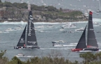
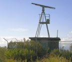
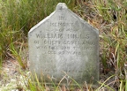
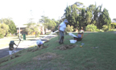
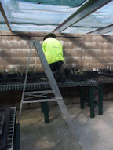
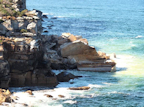

2016 Newsletters
If you would like to receive North Head Sanctuary Foundation newsletters via your email, just ask to be put on the mailing list by contacting:
northhead@fastmail.com.au

Boxing Day Yacht Race
January 2016
Boxing Day at North Head; My North Head by Alan Ventress; Christmas Bells on North Head; Native Plant Nursery; Third Cemetery - Alfred Eric Brown; Answer to mystery plant photo

Mystery radar
February 2016
General Meeting February 6; Native Plant Nursery volunteers working on the Oval; Congratulations to July Reizes - 25yrs service; Caustis flexuaosa; Clean Up Australia Day on March 6; Mystery posed Nov 2010 now solved; The Thistle Saga; Third Cemetery - Ferdinand Mercker - small pox

William Mills' headstone
March 2016
Clean Up North Head on March 6; Rain Gauge; Thistle Saga - part 2; Third Cemetery - Smallpox - William Mills and others in January 1887

Golden Orb Spider
April 2016
General Meeting May 11at 7pm - speaker Peter Mcinnis; Golden Orb Spider; Clean Up at North Head; Protection of North Head's native fauna; Scotch Thistle - part 3; Third Cemetery - Smallpox from The Preussen

Julie Nettleton
May 2016
Next meeting - May 11 at 7pm - speaker, Peter Macinnis; Native Plant nursery invitation for people to join in; Odours at North Head; Little wattlebird; Gold Medal for botanical art for Julie Nettleton; Survey mark at Collins Flat; Thistle Saga Part 4 and other weeds; Third Cemetery - The Preussen - Part 4

Bank planted 2013
June 2016
Guringai Festival Walk; Frank Langham Burdett – his mark; Eastern Suburbs Banksia Scrub recommended to be listed as critically endangered; Second Cemetery; Third Cemetery - John Lindsay Christie; Miniature Range building; Venomous spiders - Part 1

Bird of Paradise fly and a Tick
July 2016
Guringai Festival Walk; Venomous spiders - part 2; Bird of Paradise Fly, Ticks, Congratulations to Manly Environment Committee for 25 years service; Third Cemetery - Bubonic Plague

Red Back Spider
August 2016
First Cemetery; Barbarian of the bush - Tea-tree; Third Cemetery - Pte Walter McCroanan; Venemous spiders - part 3

Repairing nursery
September 2016
Annual General Meeting - 2pm on 8th October - in Building 20; Nursery - break in and repairs; Boronia ledifolia; Spring Wildflower Walks; Manly Environment Centre celebrates 25yrs - Sept 25 1pm-4pm; Third Cemetery - another plague victim; High Rise buildings for North Head proposed in 1956; Venemous spiders - part 4

Rockfall Aug 2016
October 2016
Annual General Meeting - 2pm on 8th October - in Building 20; Rock fall on North Head; Water on North Head

Walk for women
November 2016
Ocean Care Day; Spring Wildflower walks report; Sydney International Walk for Women; Nursery Group; Whisky Grass; Third Cemetery - suicide of Peter Chervin; NO DOGS on North Head

Tawny Frogmouth
December 2016
Education Room; New Brochure; Return of the Tawny Frogmouths; Native Plant Nursery; Piece be with you; Third Cemetery - bubonic plague